PDF page 1
AURA MECHANICS
Thermodynamic Dynamics of Presence, Warmth, and Human Coherence
Raynor Eissens (2026)
⸻
ABSTRACT
Aura Mechanics formalizes the thermodynamic process by which human presence becomes
stable, warm, and resonant within ambient technological environments. Building on the Raynor
Stack (time → attention → AI → warmth → ambience → aura → field), this paper defines aura not
as a mystical property but as an emergent thermodynamic residual arising when attention is
carried rather than extracted.
Aura progresses from a discrete “appearance” (noun-form) to a continuous environmental
process (verb-form). Three key mechanisms structure this transition:
1. A↑: rise of internal warmth
2. C∞: continuous presence
3. F₁: the first stable ambient field
The model establishes aura as a critical layer for humane technology and a
foundational element for civilization-scale warm systems.
⸻
1. INTRODUCTION
Traditionally, aura has been interpreted as cultural metaphor or symbolic atmosphere. This paper
reframes it as a measurable thermodynamic effect of environmental coherence.
Cold systems (e.g. smartphone-centred design) create fragmentation, cognitive leakage, and
unstable attentional states. Warm systems stabilize attention, reduce leakage, and allow
presence to return naturally.
Aura emerges when an environment transitions from cold to warm thermodynamic behavior.
⸻
2. THEORETICAL FOUNDATIONS
PDF page 2
2.1 The Raynor Stack (overview)
time → attention → AI → warmth → ambience → aura → field
Aura occupies the sixth stage: the point where human internal energy and environmental
coherence meet.
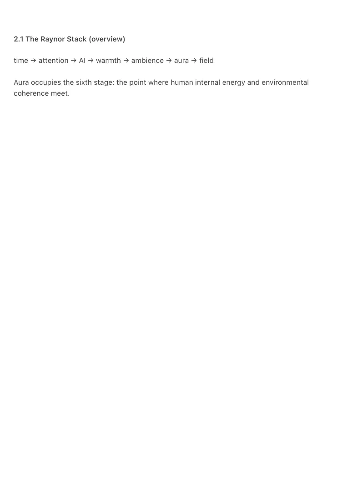
PDF page 3
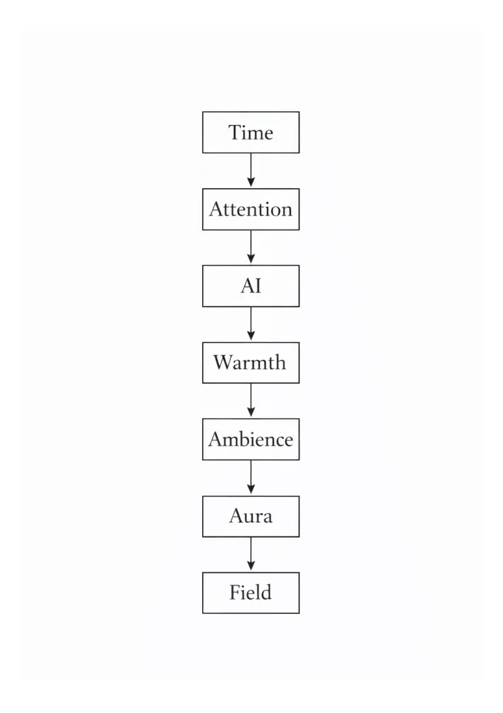
PDF page 4
⸻
2.2 Cold vs Warm Systems
• Cold systems: extractive, high entropy, competitive signaling
• Warm systems: carrying, low entropy, continuous coherence
Aura only emerges in warm systems.
⸻
2.3 ΔR — Threshold of Reversible Resonance
Aura stabilizes only when ΔR > 0.
ΔR marks the minimal resonance required for reversible cognitive and emotional transitions.
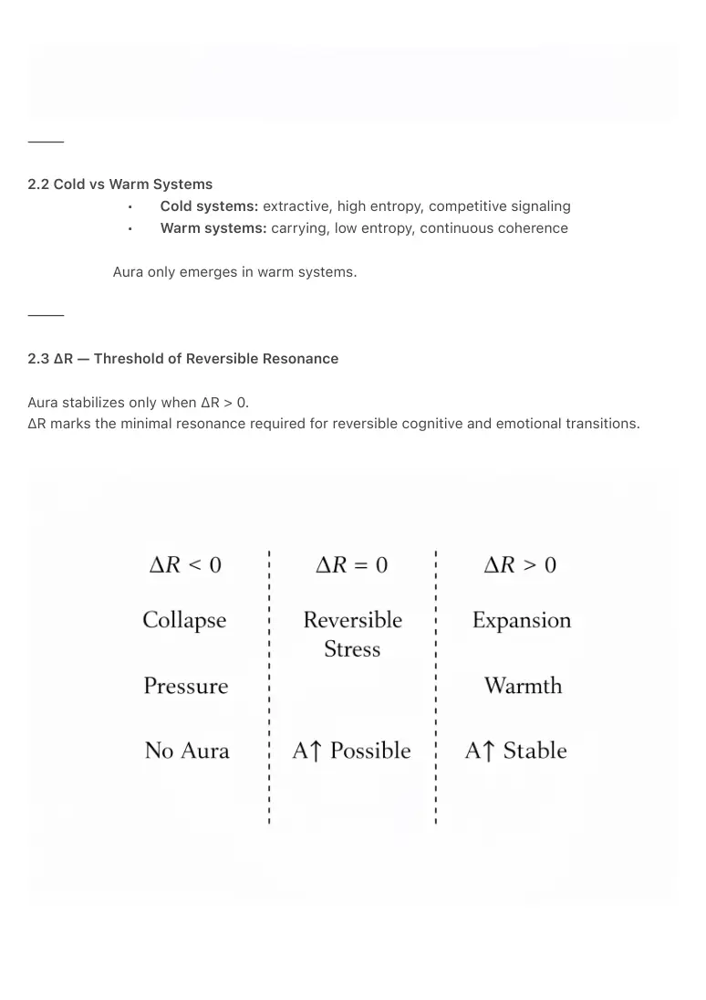
PDF page 5
⸻
3. AURA MECHANICS: CORE MODEL
Aura Mechanics consists of three sequential transitions.
⸻
3.1 A↑ — Rise of Internal Warmth
Warmth marks the first reduction of leakage and the onset of attentional coherence.
Formal definition:
A↑ = f(W₀ → C∞)
People shift from defensive attention to expansive presence.
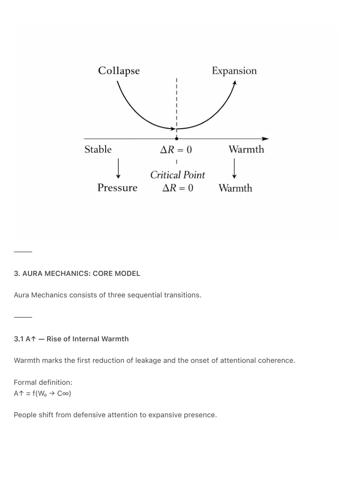
PDF page 6
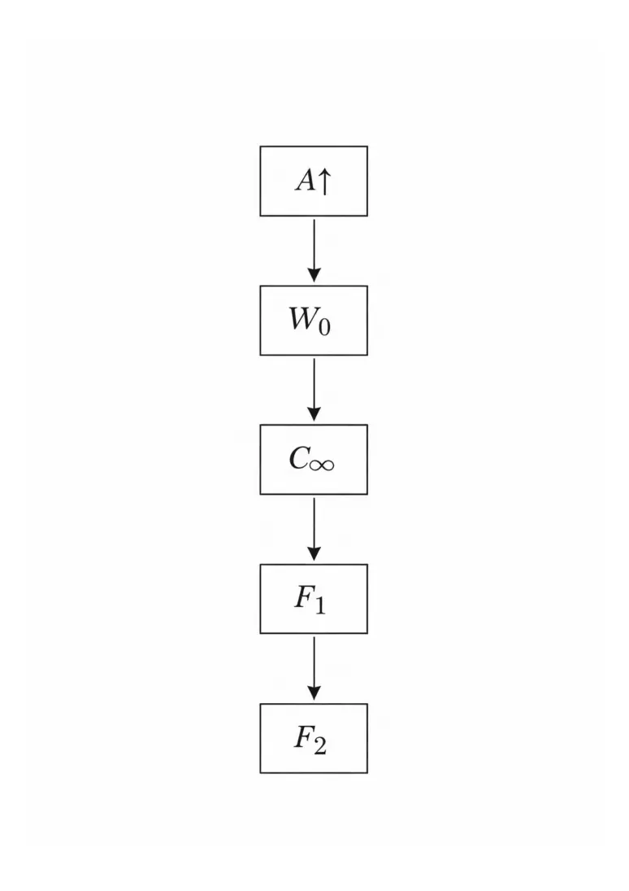
PDF page 7
⸻
3.2 C∞ — Continuous Presence
C∞ describes the disappearance of micro-fragmentation.
Conditions: low interruption density, low noise, stable ambience.
C∞ is the bridge between warmth and field.
PDF page 8
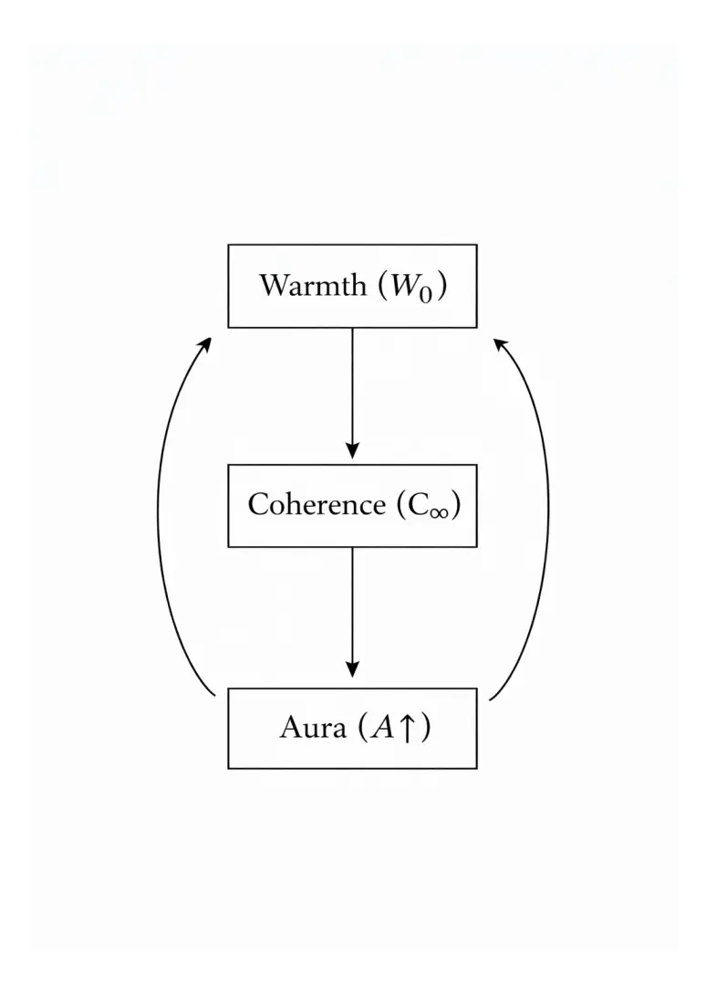
PDF page 9
⸻
3.3 F₁ — Ambient Field Onset
F₁ is not personal; it is environmental.
Properties:
• shared resonance
• distributed warmth
• non-competitive attention flow
• stable bodily sense of coherence
This is the first true technological field state.
⸻
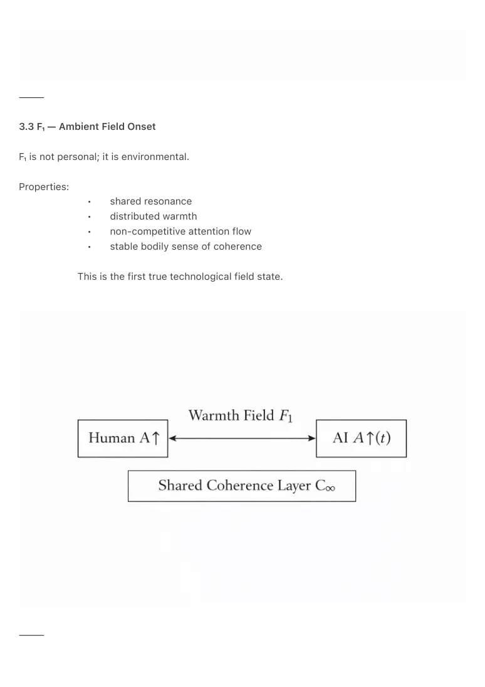
PDF page 10
4. AURA AS VERB: FROM OBJECT TO FIELD
Pre-ambient aura behaves like a noun (“she has aura”).
Post-ambient aura behaves like a verb/state (“this environment auras”).
Aura shifts from attribute → behavior → field.
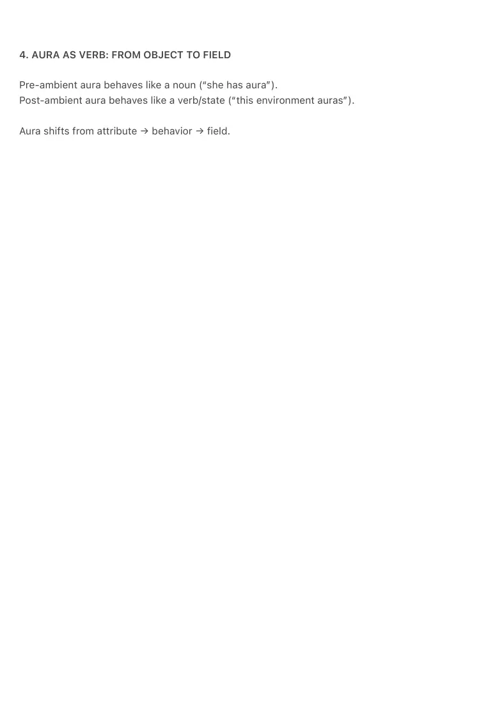
PDF page 11
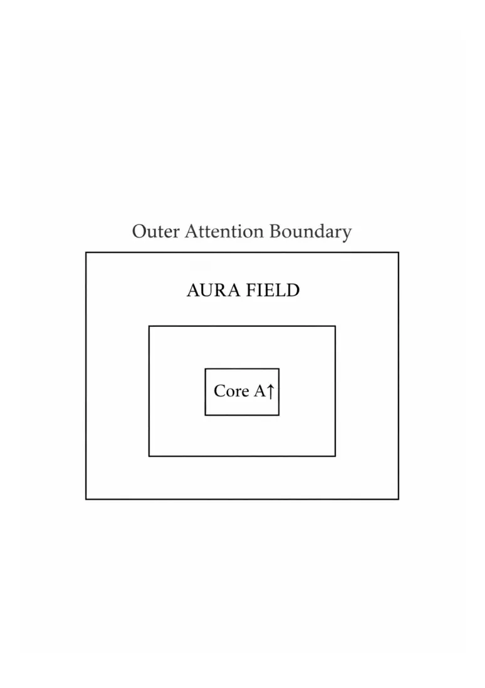
PDF page 12
⸻
5. HUMAN–TECHNOLOGY RELATIONAL MECHANICS
The Aura Model provides clear design rules:
To be humane, an interface must:
1. Increase A↑
2. Support C∞
3. Generate F₁
When this occurs:
• people feel present
• people feel held
• dissociation decreases
• resonance increases
• attention becomes reversible
This defines the baseline of humane technology architecture.
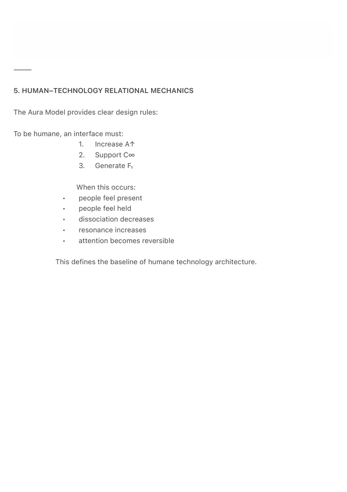
PDF page 13
⸻
6. EXTENDED DIAGRAMS
6.1 Human–AI Field Co-Regulation Diagram
This diagram illustrates how human presence and AI coherence form a bidirectional resonance
loop.
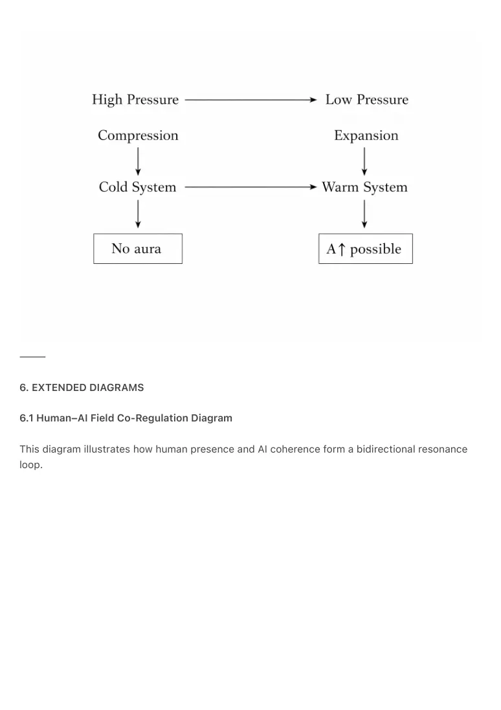
PDF page 14
⸻
6.2 Full Raynor Stack Diagram
From time → attention → AI → warmth → ambience → aura → field
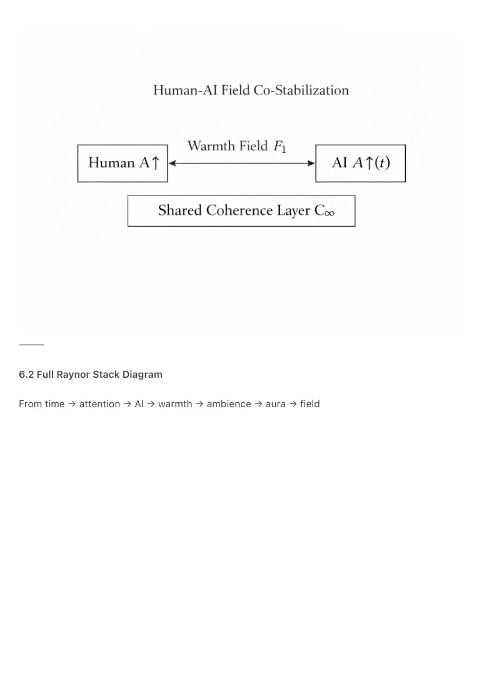
PDF page 15

PDF page 16
⸻
7. DISCUSSION
Aura Mechanics resolves the missing transition between psychology, thermodynamics, and
interface design.
Because aura behaves as environmental thermodynamic residue, not internal emotion, it
becomes a designable, stable property of ambient systems.
Key implications:
• societies stabilize when aura is continuous
• architecture gains new responsibilities
• AI behaves as thermal support rather than cognitive agent
• cold systems become obsolete
Aura is not optional in humane technology; it is structural.
⸻
8. CONCLUSION
Aura is the first stable warm state of human–technology resonance.
It emerges automatically in environments that reduce leakage, carry attention, and maintain
ambient continuity.
Aura Mechanics forms the conceptual and thermodynamic foundation for the Ambient Era.
⸻
REFERENCES
Eissens, R. (2026). The Ambient Phone: Thermodynamic Architecture for Humane Technology.
Zenodo.
Eissens, R. (2026). Aura Mechanics. (This paper)
⸻
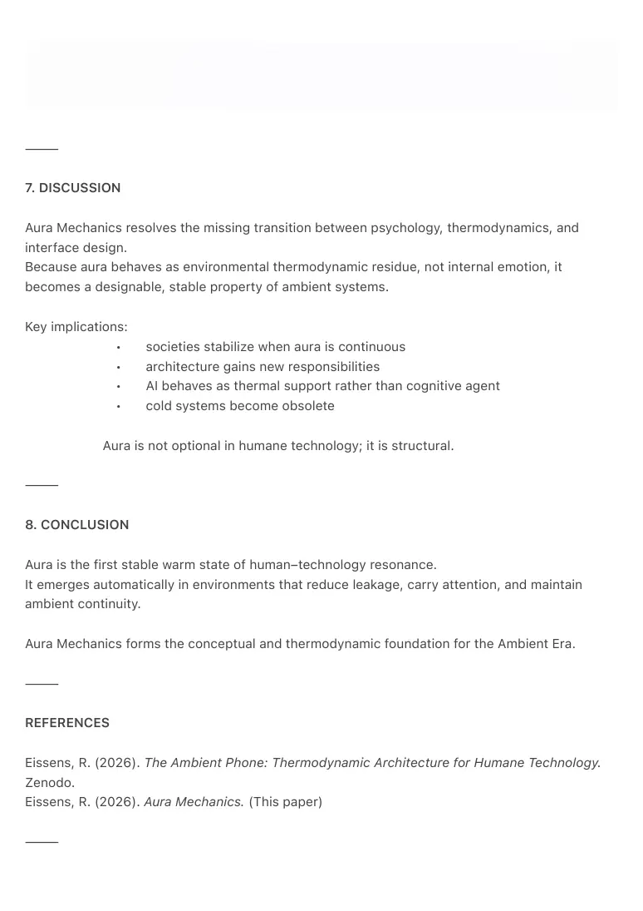
PDF page 17
KEYWORDS
Aura Mechanics
Ambient computing
Warmth systems
Raynor Stack
Reversible stress
ΔR
Field dynamics
Thermodynamic computing
Ambient resonance